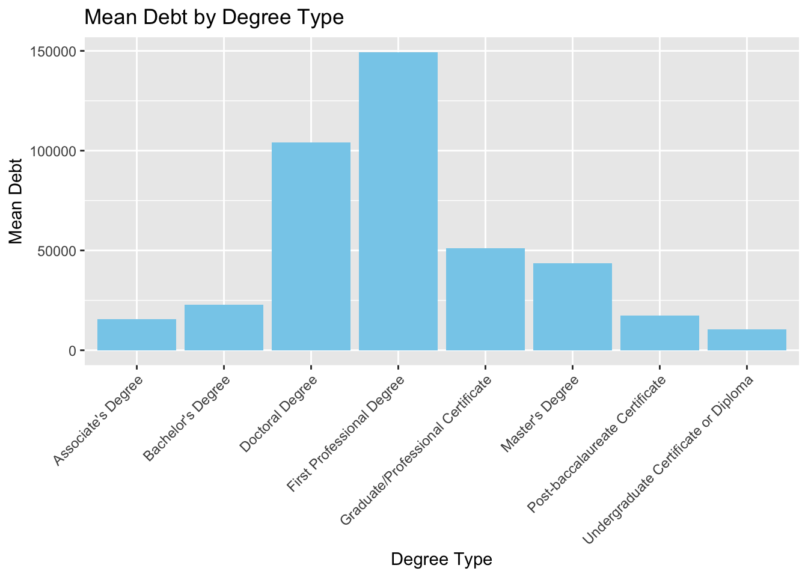
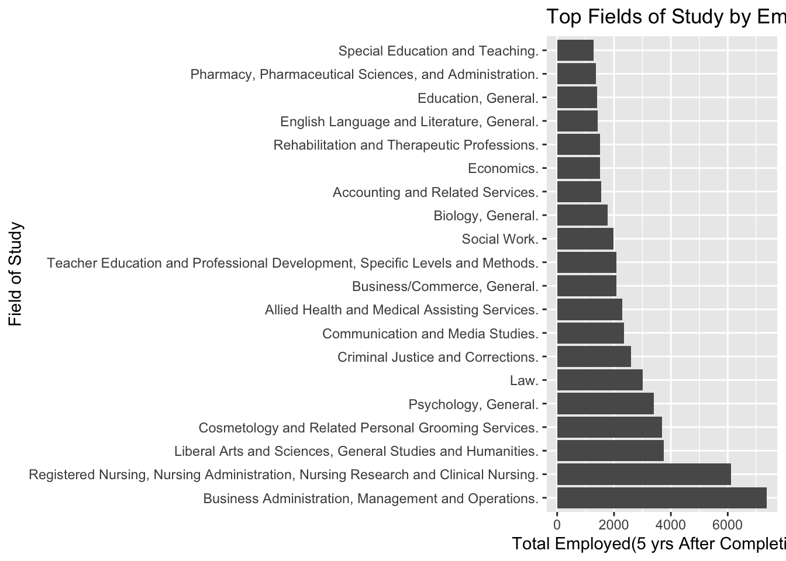
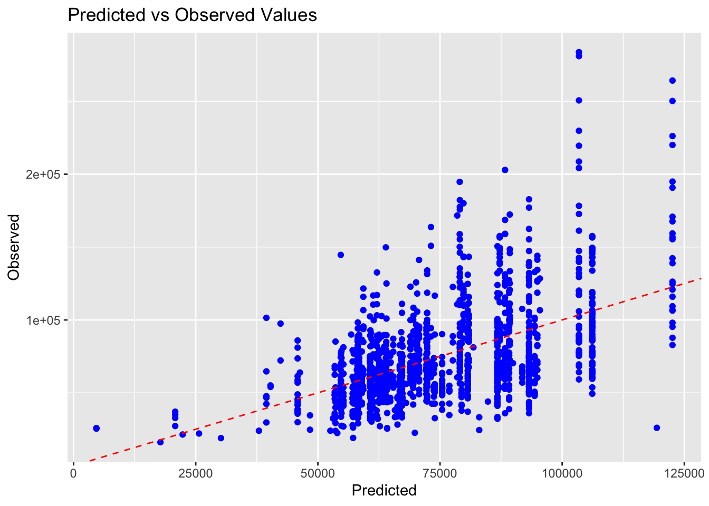

── Attaching core tidyverse packages ──────────────────────── tidyverse 2.0.0 ──
✔ dplyr 1.1.4 ✔ readr 2.1.5
✔ forcats 1.0.0 ✔ stringr 1.5.1
✔ ggplot2 3.5.1 ✔ tibble 3.2.1
✔ lubridate 1.9.3 ✔ tidyr 1.3.1
✔ purrr 1.0.2
── Conflicts ────────────────────────────────────────── tidyverse_conflicts() ──
✖ dplyr::filter() masks stats::filter()
✖ dplyr::lag() masks stats::lag()
ℹ Use the conflicted package (<http://conflicted.r-lib.org/>) to force all conflicts to become errors
library(dplyr)# Some EDA about the second datasetdebt_degree <-read_csv(here::here("dataset-ignore", "Most-Recent-Cohorts-Field-of-Study.csv"), show_col_types =FALSE) |>select(c(CREDDESC, DEBT_ALL_STGP_EVAL_MDN)) |>filter(CREDDESC !="PS", DEBT_ALL_STGP_EVAL_MDN !="PS") |>mutate(DEBT_ALL_STGP_EVAL_MDN =as.numeric(DEBT_ALL_STGP_EVAL_MDN))debt_summary <- debt_degree |>group_by(CREDDESC) |>summarise(mean_debt =mean(DEBT_ALL_STGP_EVAL_MDN, na.rm =TRUE))ggplot(debt_summary, aes(x = CREDDESC, y = mean_debt)) +geom_bar(stat ="identity", fill ="skyblue") +labs(title ="Mean Debt by Degree Type", x ="Degree Type", y ="Mean Debt") +theme(axis.text.x =element_text(angle =45, hjust =1))

Comments: This graph depicts the mean debt of the median total debt taken out at each school by the degree type. This information is derived by the columns: CREDDESC and DEBT_ALL_STGP_EVAL_MDN which provides information on the degree type and median debt taken out for each school respectively. From this, we can infer that the degree which had the highest debt accumulated by the students is “First Professional Degree” and the lowest is an “Undergraduate Certificate or Diploma”. It is important to note that this data does not include transfer students who took loans from another school before attending these ones. Furthermore, the samples size for each degree type is disproportionate.
# Some EDA to the new combined dataseteducation_cohort_combined_data1 <-read_rds("dataset/education_cohort_combined_data.rds")#str(education_cohort_combined_data1)#summary(education_cohort_combined_data1)#head(education_cohort_combined_data1)
Warning: There was 1 warning in `mutate()`.
ℹ In argument: `EARN_COUNT_WNE_5YR = as.numeric(EARN_COUNT_WNE_5YR)`.
Caused by warning:
! NAs introduced by coercion
library(ggplot2)top_fields <- field_summary |>top_n(20, Total_Working_5YR)#Listing the fields of study with the highest employment outcomes in a descending orderggplot(top_fields, aes(x =reorder(CIPDESC, -Total_Working_5YR), y = Total_Working_5YR)) +geom_bar(stat ="identity") +coord_flip() +labs(title ="Top Fields of Study by Employment Outcomes", x ="Field of Study", y ="Total Employed(5 yrs After Completion)")

#Have to use coord_flip() because otherwise the names of different fields of study will be overlapped with each other
Comments: Used CIPDESC and EARN_COUNT_WNE_5YR from the combined dataset to create a bar chart listing the top 20 fields of study with the highest employment.
library(ggplot2)# Compare predicted values with actual values to evaluate model performance.predictions <-predict(model, cleaned_data)ggplot(cleaned_data, aes(x = predictions, y = EARN_MDN_5YR)) +geom_point(color ="blue") +geom_abline(intercept =0, slope =1, color ="red", linetype ="dashed") +labs(title ="Predicted vs Observed Values",x ="Predicted",y ="Observed")
Warning: Removed 11 rows containing missing values or values outside the scale range
(`geom_point()`).

# Reshape the data to long formatlong_data <- cleaned_data %>%pivot_longer(cols =starts_with("UGDS_"), names_to ="Race", values_to ="Proportion")# Check the reshaped datahead(long_data)
# A tibble: 6 × 116
INSTNM EARN_COUNT_WNE_5YR EARN_MDN_5YR CIPDESC CREDDESC D150_4 D150_4_POOLED
<chr> <dbl> <dbl> <chr> <chr> <dbl> <dbl>
1 Alexand… 22 16091 Cosmet… Undergr… NA NA
2 Alexand… 22 16091 Cosmet… Undergr… NA NA
3 Alexand… 22 16091 Cosmet… Undergr… NA NA
4 Alexand… 22 16091 Cosmet… Undergr… NA NA
5 Alexand… 22 16091 Cosmet… Undergr… NA NA
6 Alexand… 22 16091 Cosmet… Undergr… NA NA
# ℹ 109 more variables: D150_4_WHITE <dbl>, D150_4_BLACK <dbl>,
# D150_4_HISP <dbl>, D150_4_ASIAN <dbl>, D150_4_AIAN <dbl>,
# D150_4_NHPI <dbl>, D150_4_2MOR <dbl>, D150_4_NRA <dbl>, D150_4_UNKN <dbl>,
# D150_4_WHITENH <lgl>, D150_4_BLACKNH <lgl>, D150_4_API <lgl>,
# D150_4_AIANOLD <lgl>, D150_4_HISPOLD <lgl>, D150_4_PELL <dbl>,
# D150_4_LOANNOPELL <dbl>, D150_4_NOLOANNOPELL <dbl>,
# D150_4_PELL_POOLED <dbl>, IRPS_2MOR <dbl>, IRPS_AIAN <dbl>, …
ggplot(long_data, aes(x = Proportion, y = EARN_MDN_5YR)) +geom_point(alpha =0.5, color ="blue") +geom_smooth(method ="lm", se =FALSE, color ="red") +facet_wrap(~Race, scales ="free_x") +labs(title ="Effect of Race Proportions on Earnings",x ="Proportion of Race",y ="Median Earnings (5 years)") +theme_minimal()
`geom_smooth()` using formula = 'y ~ x'
Warning: Removed 7094 rows containing non-finite outside the scale range
(`stat_smooth()`).
Warning: Removed 7094 rows containing missing values or values outside the scale range
(`geom_point()`).